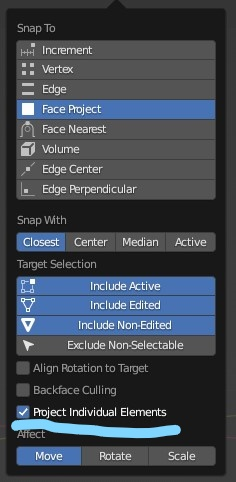
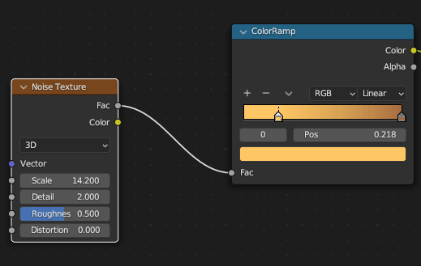

Hotkeys
Note
[X, Y, Z] means choose ‘X’ or ‘Y’ or ‘Z’ on the keyboard.
The ‘+’ sign implies a combination of mouse clicks and button presses.
LMB = Left Mouse Button.
RMB = Right Mouse Button.
MMB = Middle Mouse Button.
Command |
Hot Key |
note |
|---|---|---|
Toggle Mode [Edit, Object] |
Tab |
Object mode is for selecting / effecting whole objects |
Edit mode for working with parts of an object |
||
Important
Hot Key |
||
|---|---|---|
Ctrl + Space | Maximize Window | |
Essential |
Warning
Some commands only work in Object Mode or in Edit Mode.
Edit mode is only available when an object is selected.
Command |
Blender |
Omniverse |
note |
|---|---|---|---|
Object |
Key |
||
Move |
G |
W |
|
“ |
G + MMB + Axis |
||
“ |
G + [X, Y, Z] |
||
notes: |
Cursor can be anywhere |
||
LMB = Confirm, RMB = cancel |
|||
Move + Axis Snap |
Click + Hold + MMB |
||
Rotate |
R |
||
R + [X, Y, Z] |
E |
||
R + Keypad_Num (Degrees) |
|||
Rotate + Snap |
R+ Ctrl + Drag |
||
Scale |
S |
R |
|
S + [X, Y, Z] |
|||
Clear Location |
Alt + G |
||
Duplicate |
Shift + D |
Ctrl + D |
|
Recover Operator Presets |
F9 |
||
Rename File |
F2 |
||
Hide / Unhide |
H, Alt H - unhides all |
||
Subsurf, Subsurface, Sub D |
Ctrl [1, 2, 3] |
Levels 1-3 |
|
Duplicate |
Shift + D |
||
Fix Normals |
Shift + N |
||
Parent |
Ctrl + P |
||
UnParent |
Alt + P |
Command |
Blender |
Note |
|
|---|---|---|---|
Viewport |
Blender |
||
Orbit |
Hold MMB + Drag |
Alt + LMB |
|
Pan |
Shift + MMB + Drag |
Alt + MMB + Drag |
|
Zoom |
MMB + Scroll |
MMB + Scroll |
|
Zoom Smooth |
Ctrl + MMB + Drag |
||
Focus Selected (Object) |
Numpad period . |
F |
|
Rotate View using Keys |
Numpad: [4, 5 ] [8, 2 ] |
||
Look Thru Camera |
Numpad - 0 |
||
Wireframe |
Shift + Z |
???? |
|
X Ray |
Alt + Z |
BLANK |
|
Align To View |
|||
Front View |
NumPad - 1 |
||
Side View |
Numpad - 3 |
||
Top View |
Numpad - 7 |
||
Orthographic |
Numpad - 5 (on |
off) |
|
Selection |
|||
Separate |
P [ Selection ] |
||
Select Linked |
L, Ctrl + L |
||
Smart Copy |
Shift + Drag |
|
|
Select Between |
Ctrl + Select |
|
|
Edge Select Loop |
Alt + Select |
||


Snapping |
|||
|---|---|---|---|
Incremental (temporary) |
Ctrl |
||
Toggle Snapping |
Shift + Tab |
 |
Blender |
Hot Key |
notes |
|---|---|---|
Object Mode |
Edit Mode |
|
Delete |
[ X , Delete ] |
X , Delete + Select Type |
Edit |
Hot Key |
notes |
|---|---|---|
Delete |
X |
|
Proportional |
O |
Toggle |
Proportional Grab |
O + G + Click [Vertice, Edge, Face ] + MMB - Scroll Up |
|
Scale Along Normals |
Alt + S |
|
Extrude |
E |
|
Select Edge Loop |
Alt + LMB |
|
Add Edge Loop |
Ctrl + R |
|
Slide Edge Loop |
G + G |
|
Select All |
‘A’ in Edit Mode |
|
Inset |
‘i’ |
|
Bevel |
Shift + Ctrl + B |
|
Join |
J |
Edge Loops
Command |
Action |
Value |
|---|---|---|
Edit Mode |
||
Add Edge Loop |
Hover Over Object: Ctrl + R |
|
Add Many Edge Loops |
Mouse Scroll Wheel + Scroll Up |
|
Select Edge Loop |
Alt + LMB |
|
Slide Edge Loop |
G + G |
Important |
Delete Edge Loop |
X or Del Key |
Edge Loop |
|

Cut Noodles
Command |
Hot Key |
note |
|---|---|---|
Cut Noodle |
Ctrl + RMB |
 |
Pie Menus
Hot Key |
Pie Menu |
|
|---|---|---|
| Select View | ||
~ (tilde) |
||
| Select Mode with Object Selected | ||
Ctrl + Tab |
|
|
| Move Pivot: Cursor to Selected | ||
Shift + S |
|
|
Move Pivot |
|
|
Center Pivot |
|
|
Hide 3d Cursor |
|


Camera Hot Keys
Command |
Hotkey |
note |
|---|---|---|
Move Camera to Perspective View |
Ctrl + Alt + Numpad - 0 |
Vital Hot Key |
Warning
The Camera cannot be selected in Edit Mode
Edit > Preferences > Input > Emulate Numpad
Allows the number keys on the top to switch views.
Split Screen
Command |
Combination |
note |
|---|---|---|
Split Screen |
Rollover + RMB |
RMB over a pane, or use cross-hair and drag from upper left corner |
Command |
Combination |
note |
|---|---|---|
Split Screens with Cross Hairs |
From a Corner, Drag a Window onto itself to split |
|
Join Screens with Cross Hairs |
Drag a Corner onto Adjacent window to merge |
Modifiers
Modifier |
note |
|---|---|
Apply |
Ctrl + A while hovering over modifier |
Mute Nodes
This is a very handy shorcut for quickly testing node’s contributions.
Command |
Combination |
note |
|---|---|---|
Mute or Disable a Node without Deleting It |
M |